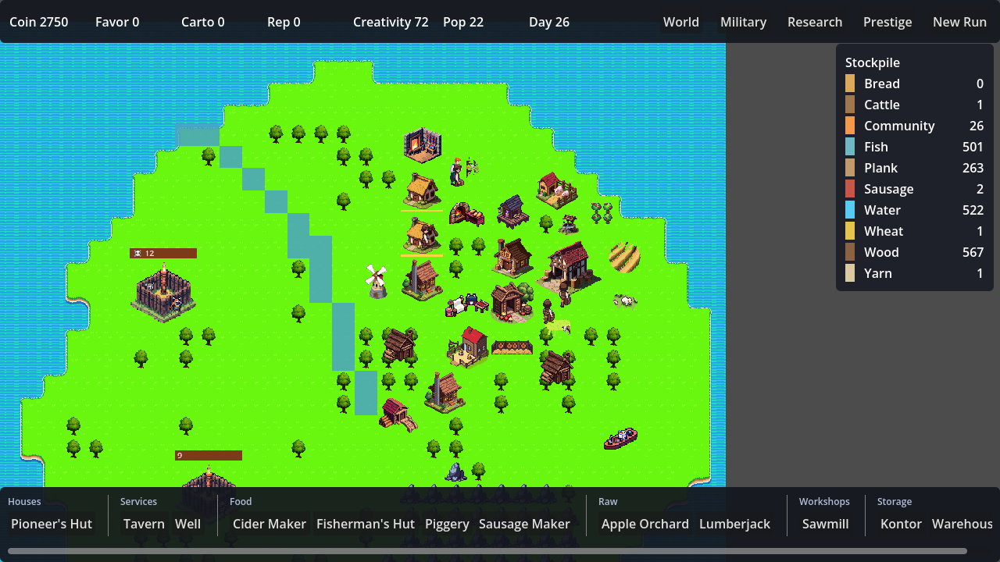

A Godot 4 / GDScript clone of Paragon Pioneers 2 — the idle, Anno-like island settlement builder. System parity with PP2 is the goal, not engine parity. Built for the aiDev portfolio; art generated with PixelLab.

A demo settlement on a seeded island — autotiled coastline, production buildings clustered in range of the coastal Kontor, houses populated, settlers walking between them. Rendered in-engine.
A playable temperate-region vertical slice covering PP2 milestones M1–M5, gated by 34 headless checks (tests/run_economy_tests.gd, exit 0/1).
advance(a)+advance(b) == advance(a+b); the remainder carries across calls.Follows the spec's directive: const catalogs + one mutable world object, not many singletons — which also makes the whole sim reachable headless for tests.
Per-tick order (fixed, golden-asserted): connectivity → production → consumption → population → payout.
| Milestone | Scope | State |
|---|---|---|
| M1–M2 | Deterministic sim, square grid, terrain placement, range/warehouse logistics | done |
| M3 | Population, the luxury cascade, emigration, payout-at-100% | done |
| M4–M5 | Production chains at scale, Coin economy & Kontor | done |
| M9 | Creativity research — population-generated perks (economy modifiers + Infinite tree), full HUD panel | done |
| M8 | Auto-resolved Orc combat — deterministic 3-phase resolver + unit catalog done; expedition flow, map camps & recruitment next | core done |
| M6–M7 | Ships, trade routes, regions; Cartography island discovery | specced |
| M10 | Palace → Reputation → Custodian prestige loop | specced |
Full system teardown and the data behind every number: pp2-spec-extract.json. Contributor guide: the repo CLAUDE.md and README.md.
godot --path . --import # register class_names (first run) godot --path . # play godot --headless --path . --script res://tests/run_economy_tests.gd # 34 checks, exit 0/1 godot --path . -- --capture # demo settlement → docs/screenshot.png